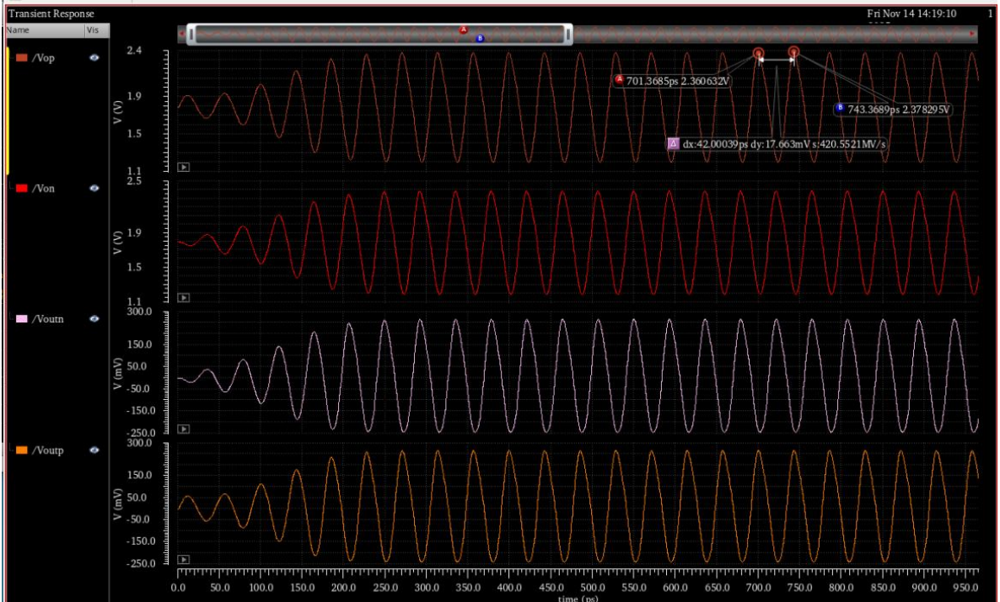
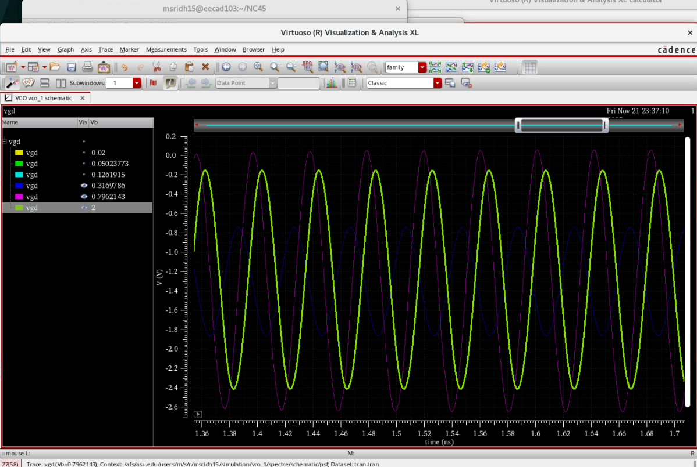
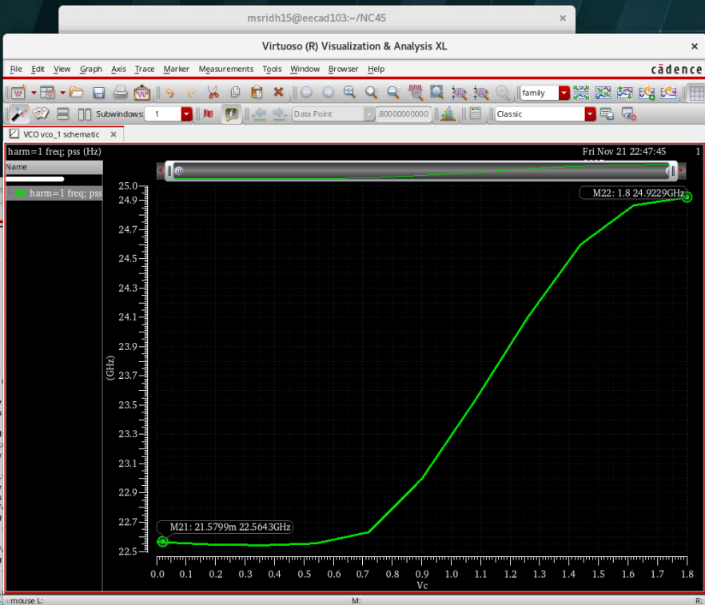
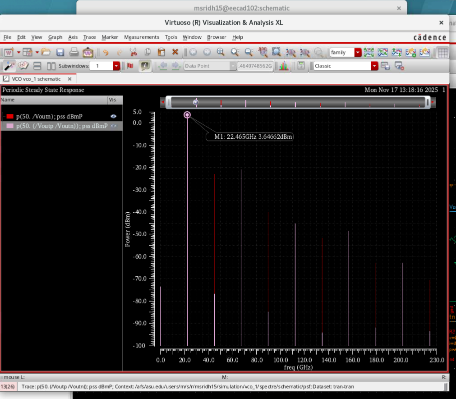
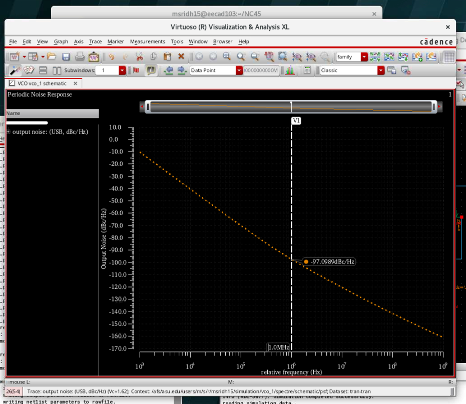

1. Design Overview & Specifications
This project presents the design of a differential cross-coupled LC voltage-controlled oscillator (VCO)
operating at 22.5 GHz for 5G mmWave transceiver applications.
The design focuses on achieving low phase noise, wide tuning range,
sufficient output power, and low DC power consumption under realistic
on-chip inductor constraints.
Target Specifications:
Center Frequency: 22.5 GHz
Tuning Range: 20.5–24.5 GHz
Output Power: > 0 dBm (single-ended)
Phase Noise @ 1 MHz offset: < −115 dBc/Hz @ 24 GHz
Power Consumption: < 32 mW
Inductor Constraint: L < 1 nH, Q ≈ 20
2. VCO Architecture

A differential cross-coupled NMOS LC VCO topology was chosen for its strong negative resistance generation, good phase noise performance, and compatibility with mmWave frequencies. The cross-coupled pair compensates for tank losses while maintaining differential symmetry and stable oscillation.
3. Startup Condition & Bias Selection
To guarantee oscillation startup, the negative resistance generated by the cross-coupled pair must exceed the tank loss:
gm ≥ 1 / Rp
The bias current and device sizing were selected to ensure sufficient transconductance while minimizing power consumption. A gate bias voltage of ≈ 500 mV was chosen to keep devices firmly in saturation and avoid triode operation during large-signal swings.
4. Transient Behavior & Large-Signal Operation
Transient simulations confirm stable oscillation with clean sinusoidal differential outputs. The buffer output achieves sufficient voltage swing to drive a 50 Ω single-ended load without significantly degrading the tank Q or tuning range.
5. Triode Region Verification
Gate-drain swing analysis was performed across bias voltages ranging from 0 to 2 V. Results confirm that the cross-coupled devices remain predominantly in saturation, validating the chosen bias strategy and preventing excessive phase noise degradation.
6. Discrete Tuning Range
Discrete tuning was implemented using three binary-weighted capacitors (C, 2C, 4C) at each differential node, providing 8 tuning states (0C–7C). This approach achieves a wide tuning range of approximately 20.5–24.5 GHz while maintaining consistent oscillation amplitude.
7. Output Spectrum & Harmonics
Frequency-domain analysis confirms a strong fundamental tone with suppressed harmonics, demonstrating clean oscillation behavior suitable for mmWave LO generation.
8. Phase Noise Performance
Phase noise simulations show values better than −115 dBc/Hz at 1 MHz offset near 24 GHz. The results align well with Leeson-based analytical predictions, validating the bias and tank design choices.
9. Final Results & Performance Summary
The final VCO consumes ≈ 31.5 mW from a 1.8 V supply while delivering wide tuning range, low phase noise, and sufficient output power. The design demonstrates a practical mmWave VCO solution suitable for 5G RF front-end integration.